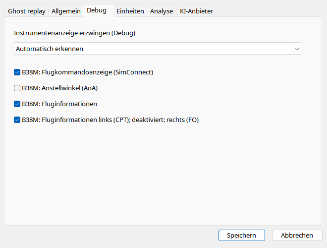

Automatisch wählt nach ICAO und Aufnahmedaten. Override vergleicht Renderer und ändert keine Flugzeugidentität. Fehlende SDK-Daten entstehen auch bei Wechsel zwischen Sixpack, PFD, B38M und A320 nicht. B38M-Optionen steuern Informationsfeld, CPT/FO, AoA und FD. FD lässt sich bei fehlenden Addon-Kommandos ausschalten.
| Option / Aktion | Verhalten und Einschränkungen |
|---|---|
| Automatisch | Typ aus Aufnahme; Override ergänzt kein fremdes SDK. |
| Familie | GA analog, GA glass, klassischer Airliner, generisches PFD, B38M PFD/EICAS oder A320 PFD/ECAM; Metadaten unverändert. |
| Information | Flugnummer/Squawk/Registrierung/SELCAL/Zeit, standardmäßig an. |
| Seite | Häkchen = links/CPT, ohne = rechts/FO; unabhängig von Sichtbarkeit. |
| AoA | Standardmäßig aus; gültige Anstellung und Bodenunterdrückung nötig. |
| FD | Standardmäßig an; gespeicherte SimConnect-Kommandos. Bei unbrauchbaren Addon-Werten ausschalten. |
